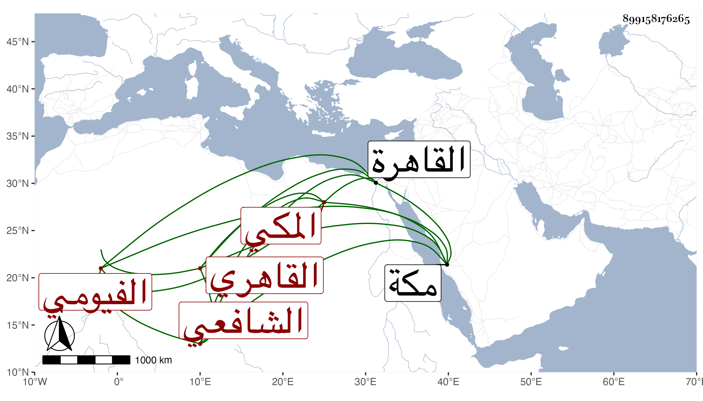

0902Sakhawi.DawLamic.ITO20230111-ara1.EIS1600.899158176265
Biography ID: 899158176265
89
محمد بن عبد العزيز بن أحمد بن محمد بن عبد الوهاب بن أسد جمال الدين ابن العز بن العماد الفيومي الأصل المكي ثم القاهري الشافعي أخو عمر الماضي وأبوهما ولد بمكة ونشأ بها فحفظ القرآن ثم قدم القاهرة وزوجه أبوه ابنة الشريف الوفائي الحنفي طمعا في أن يكون شاهدا عنده فلم يحصل اتفاق ولازم زكريا فاستنابه في القضاء وجلس بمجلس النووي السراج فلم يحتمل ذلك فحوله لمجلس الجمالية ثم لغيره بل صار من قضاة النوبة عوض المحب الأسيوطي مع مجلس بقناطر السباع وعد كل هذا من القبائح وأنكر ولايته السلطان فمن دونه . مات بالطاعون في سنة سبع وتسعين وخلفه في مجلسه أبو الفوز بن زين الدين وقيل ردونا إلى الأول .
